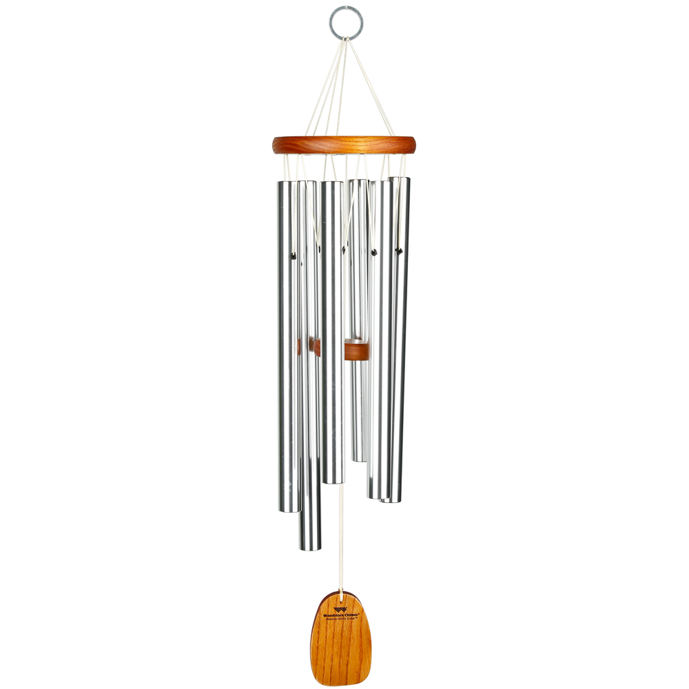

A carillon-like instrument with fewer than 23 bells is called a chime.
American chimes usually have one to one and a half diatonic octaves. Many chimes
are automated.
The first bell chime was created in 1487. Before 1900, chime
bells typically lacked dynamic variation and the inner tuning (the mathematical
balance of a bell's complex sound) required to permit the use of harmony. Since
then, chime bells produced in Belgium, the Netherlands, England, and America
have inner tuning and can produce fully harmonized music.Some towers in England
hung for full circle change ringing chime by an Ellacombe apparatus.

Notable chimes:
The Arma Sifton bells at the International Peace Garden, North Dakota, United
States. The 14 bells by Gillett & Johnston were a gift from Central United
Church of Brandon, Manitoba, in 1972. The tower was supplied by North Dakota
Veterans and dedicated in 1976.
The chimes of St. Peter the Apostle Parish in New Brunswick, New Jersey, United
States. These nine bells were installed in 1870 by Meneely Bell Company of
Watervliet, New York.
Ann Arbor Farmer's Market. Consists of 17 bells, 10 of which were originally
cast for St. Stephen's Church in Cohasset Massachusetts, in the 1920s and 7
bells cast in 1997 by Royal Eijsbouts bell foundry in The Netherlands.
The chime at the Highland Arts Theatre (formerly St. Andrew's United Church) in
Sydney, Nova Scotia still sings forth regularly and has become a part of the
sound of the city's downtown. This is the original McShane Bell Foundry Ten Bell
Chime, installed in the church as it was constructed in 1911. In December 2015 a
video posted on Facebook of Sydney native Glenda Watt playing the Christmas
carol “Angels We Have Heard on High” on the chime was viewed more than 1.6
million times within the first nine days of it being uploaded to the social
networking site.